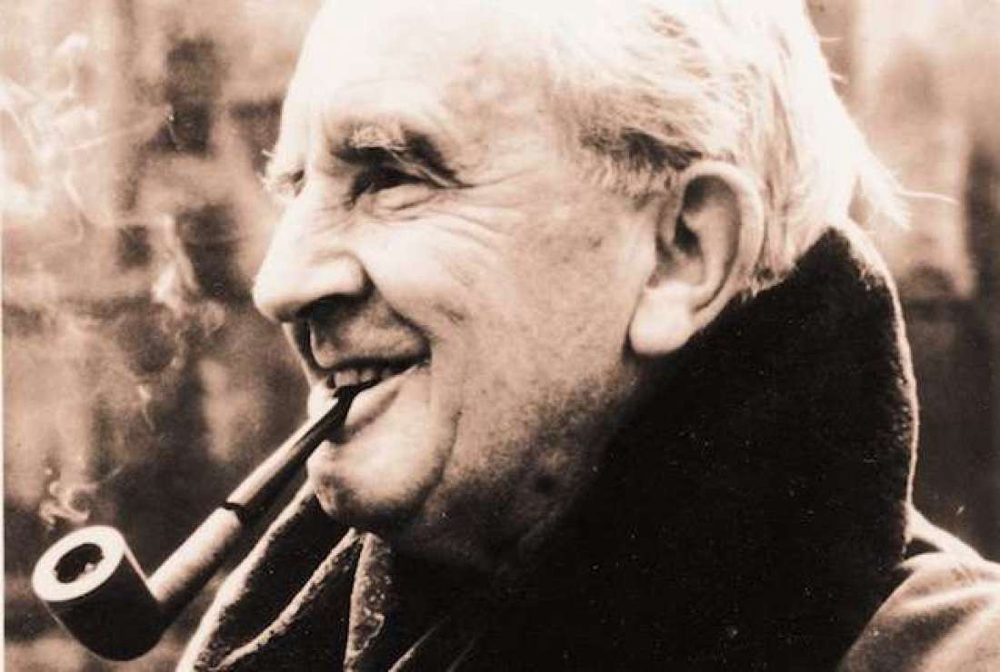

J.R.R. TOLKIEN

J. R. R. Tolkien (1892-1973) foi um escritor, filólogo e professor universitário inglês,
autor de Senhor dos Anéis e Hobbit, verdadeiros clássicos da literatura fantástica. Em 1972
foi nomeado Comandante da Ordem do Império Britânico pela Rainha Elizabeth II.
John Ronald Reuel Tolkien, conhecido como J. R. R. Tolkien, nasceu em Bloemfontein, África do Sul,
no dia 3 de janeiro de 1892. Filho do inglês Arthur Tolkien, bancário que trabalhava no Bank of África,
e de Mabel Suffield Tolkien, viveu na África do Sul até a morte de seu pai em 1896, ano em que se mudou
com sua mãe e seu irmão para a cidade de Birminghan, na Inglaterra. A conversão de sua mãe da Igreja Anglicana
para o catolicismo lhe marcou profundamente, tornando-se também um católico fervoroso. Em 1908 ingressou no
Exeter College, da Universidade de Oxford e logo mostrou interesse pela filologia e por antigas sagas e lendas
nórdicas.
Em 1904, após a morte de sua mãe, Tolkien e seu irmão foram entregues aos cuidados do padre jesuíta Francis
Xavier Morgan que Tolkien mais tarde o descreveu como um segundo pai. Especializou-se em línguas Anglo-Saxônicas,
língua alemã e literatura clássica na Universidade de Oxford. Em 1914 alistou-se no Lancashire Fusilieres. Em 1916
casou-se com Edith Bratt. Depois de servir na Primeira Guerra Mundial, continuou seus estudos de Linguística na Universidade de Leeds.
Entre 1925 e 1945 lecionou língua e literatura anglo-saxônica na Universidade de Oxford, quando se especializou em literatura medieval.
Depois de publicar os ensaios “Sir Gawain e o Cavaleiro Verde” (1925) e “Beowulf” (1936), iniciou a criação de um personagem
mitológico inspirado em uma saga épica medieval, repleta de elementos fantásticos e de seres e mundos imaginários. A novela
denominada “Hobbit” (1937) escrita para crianças, narra as aventuras de um povo pacato e sensato que vive na mítica “Terra Média”,
junto com elfos, duendes e magos.